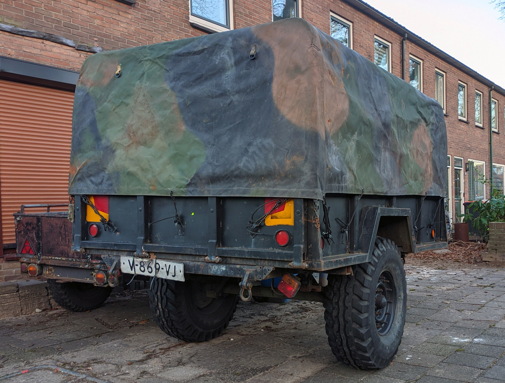
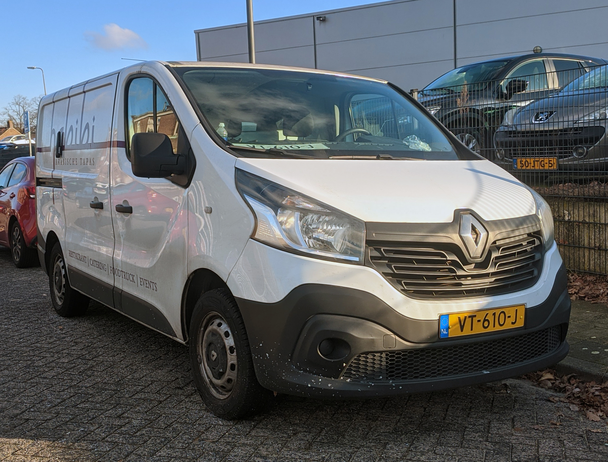
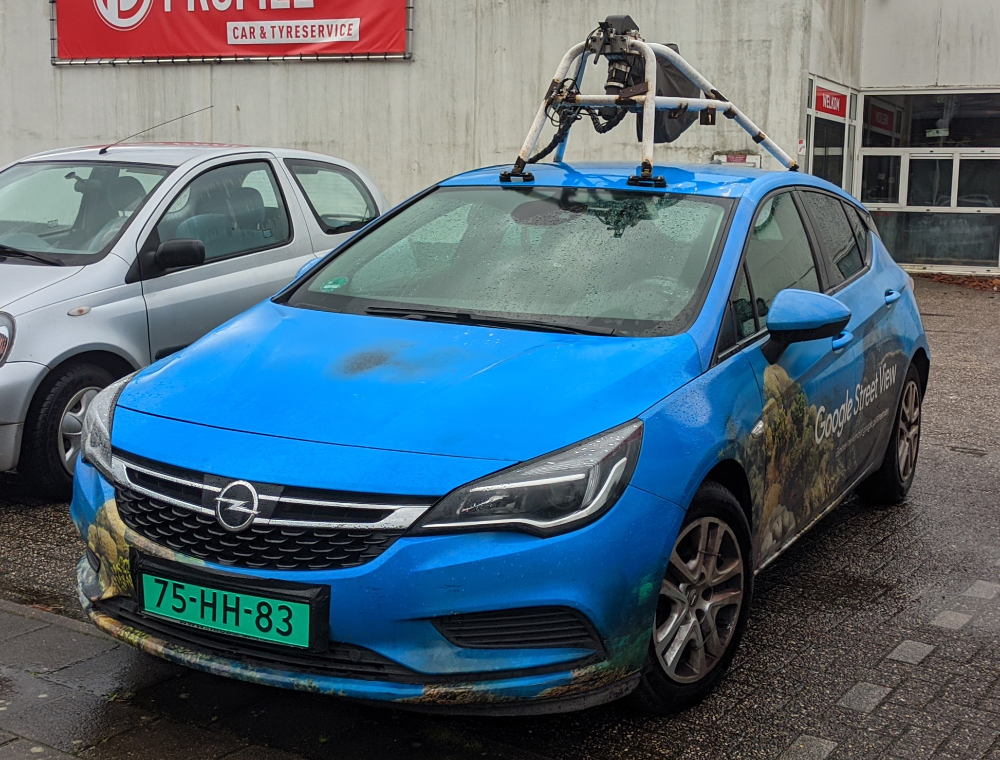

License Plates of
The Netherlands (NL)
Photographed in The Netherlands


Sidecode 5. White plates are used as repeater plates. Or for export on cars.


Sidecode 4. White plates are used as repeater plates. Or for export on cars.

Sidecode 10. White plates are used as repeater plates. Or for export on cars. V = Commercial Vehicle under 3500kg.

Sidecode 9. White plates are used as repeater plates. Or for export on cars. V = Commercial Vehicle under 3500kg.


Sidecode 10. Black on dark blue = Taxicab


Sidecode 7. Black on dark blue = Taxicab

Sidecode 6. M = Motorcycle.


Sidecode 5. M = Motorcycle.


Sidecode 4. O = Oplegger (trailer).

Sidecode 2. H = Handelaar (Dealer). Green plate are used be car dealerships.